키다리형이라는 유튜브 운동 인플루언서가 있었다.
키 190센티미터에 내추럴을 지향하는 피트니스 트레이너 겸 운동 유튜버였는데,
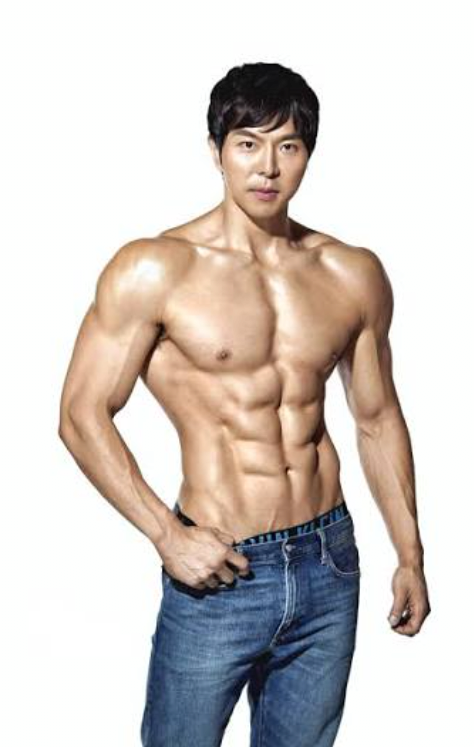
그런 그가 만 나이 40을 넘기고 처음이자 마지막으로 스테로이드를 투약하고 보디빌딩 대회에 도전하겠다고 나섰다.
구독자 50만에 가까운 유명 운동 유튜버였기에 많은 코치들이 관심을 보였고,
키다리형은 당시 기능성 운동으로 혜성처럼 유튜브와 업계에 이름을 알리던 모 트레이너를 선택하여 그와 함께 투약과 대회 준비를 시작하였다.
그러나..
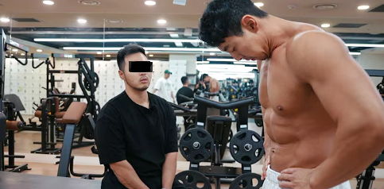
모 트레이너는 안타깝게도 보디빌딩 화학전과 내분비계 기전, 그리고 영양학에 대해 아무 것도 검증이 되지 않았고 그 어떤 결과도 내지 못했던 이였다.
스스로는 120킬로그램까지 벌크업을 하고 다이어트를 했다고 하나 그 누구도 실체를 보지 못한,
아무것도 검증이 되지 않은 사람이었다.
그 결과
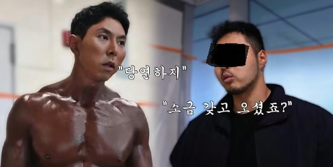
50만 구독자의 운동 인플루언서 키다리형은 대회 당일 처참한 컨디셔닝과 몸을 보여주며 나락으로 떨어지고 만다. 코다리찜, 실패자 등의 낙인이 찍혔고, 이후 여러가지 개인사가 겹쳐 결국 키다리형은 보디빌딩 계에서 은퇴를 선언하게 된다..
이 사건에 대해 국내 헤비급 보디빌더 이승철은 이렇게 평한 적이 있다.
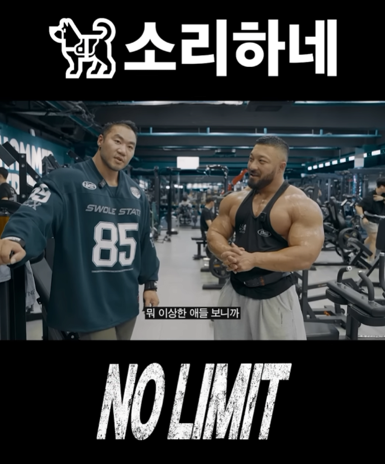
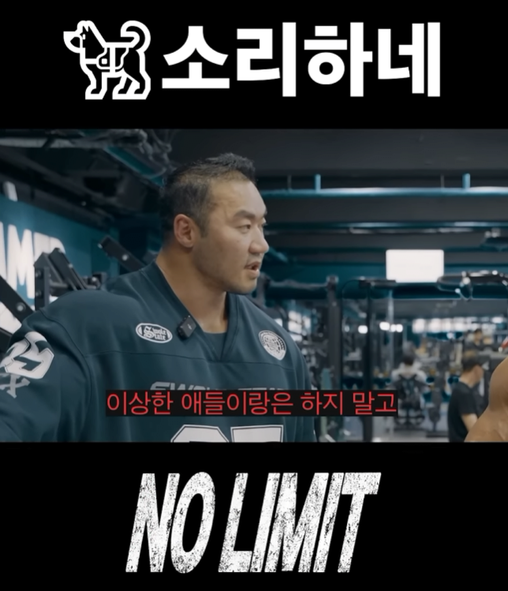
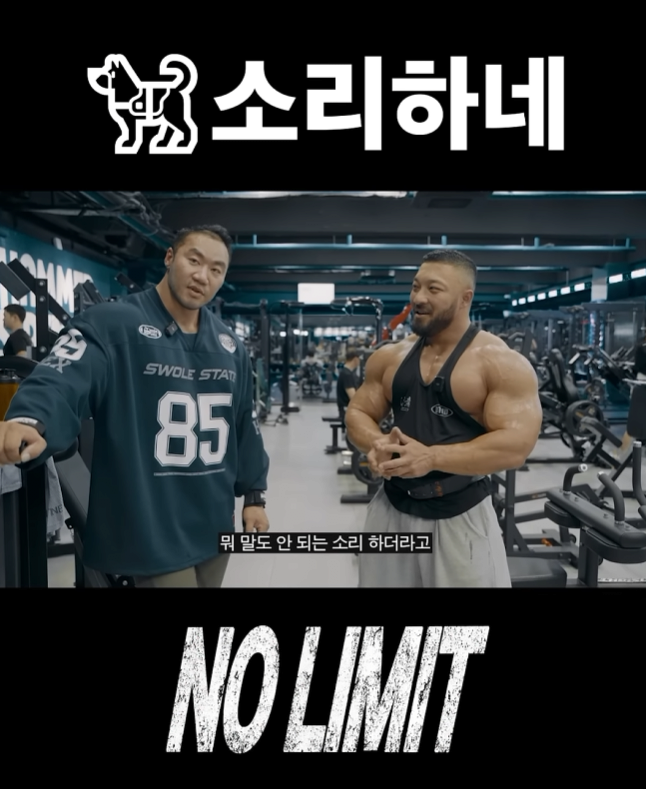
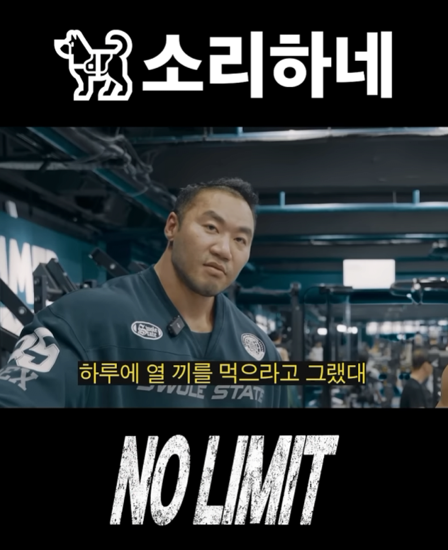
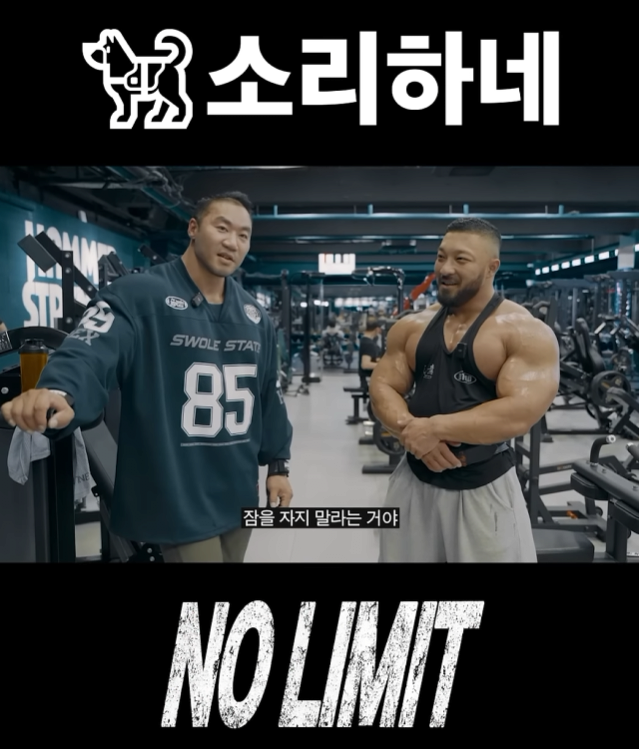
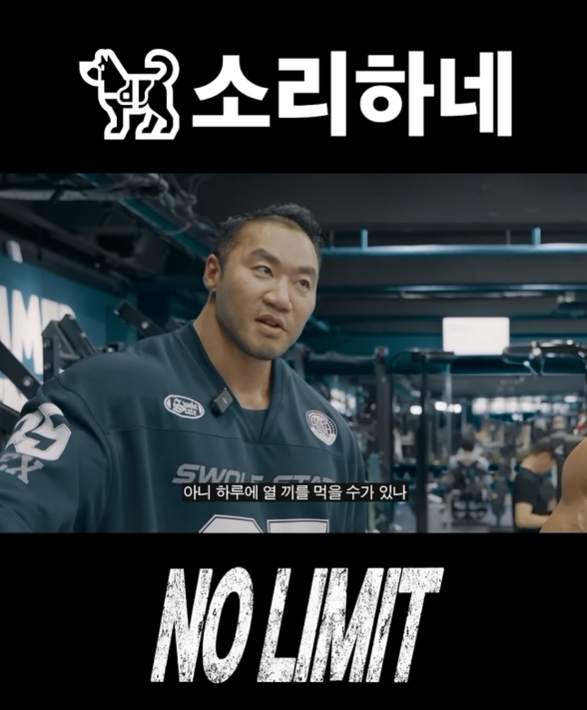
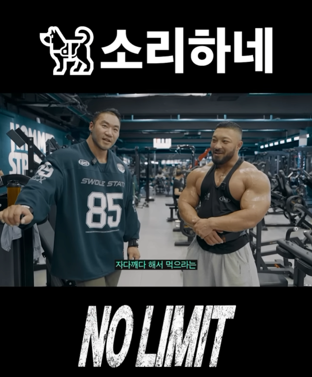
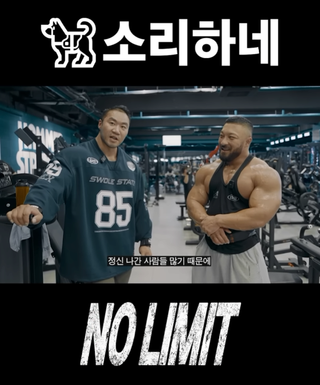
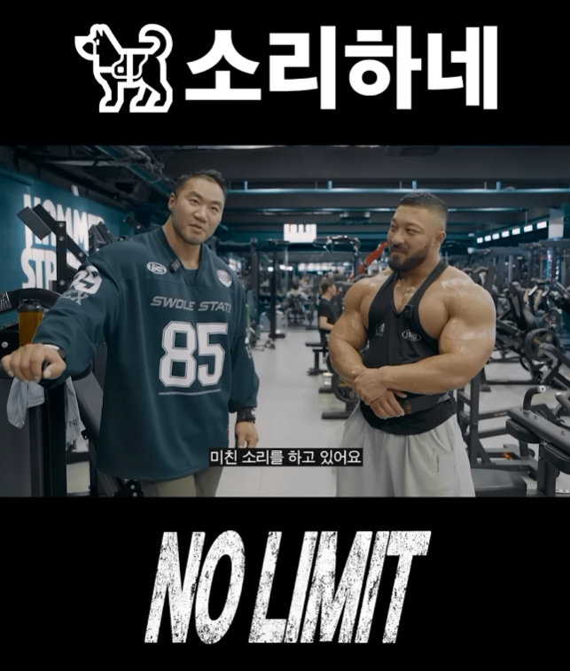
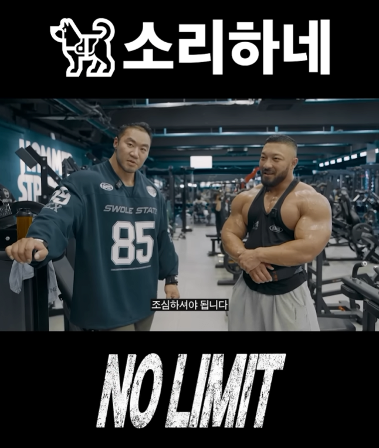
...
그렇게 모 트레이너는 업계에서 잊혀지는 듯 했으나..
갑자기 전혀 예상치 못한 곳에서 그가 다시 나타나게 된다.
바로 대세 걸그룹으로 떠오른 리센느의 유튜브 채널에서 뜬금없이 전담 트레이너로 등장하게 된 것.
그리고 그런 그가 자랑스럽게 유튜브에서 밝힌 1회 운동량은 다음과 같았다.
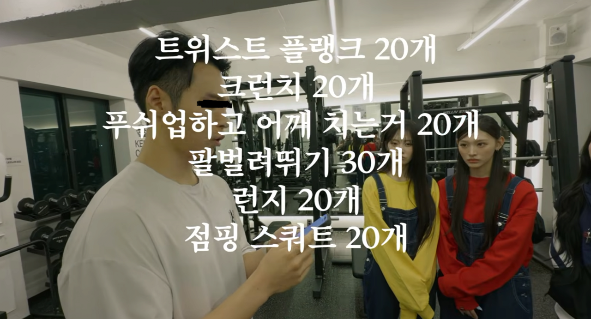
화면에는 나오지 않지만 이 앞에 점핑 버피 30개가 더 있다.
그리고 이런 미친 운동량을 하루에 8세트.
이 영상을 보게 된 업계 사람들은 탄식을 금치 못했다.
물론 화면 상의 이유로 인하여 뼈말라가 필수 덕목인 아이돌이라 하지만,
실제 대형 기획사에 고용된 트레이너들의 경우 가뜩이나 많은 연습량으로 인해 오버 트레이닝 상태인 연습생들에게 격한 운동보다는 철저하게 계산된 영양 공급 아래의 식단 통제로 다이어트를 시키는 반면,
이 모 트레이너는 이미 오버 트레이닝 상태인 성장기 미성년 여자 아이에게 성인도 감당하지 못한 어마어마한 운동량을, 군대 유격 훈련 급이다, 이거 하면 살이 찔 수가 없다 라고 자화자찬하며 시켰다는 것에 경악한 사람이 다수였다.
사람의 몸은 극한의 상황에 접어들면 본능적으로 식탐이 오르고 먹는 족족 에너지 소모 대신 체지방 축적에 힘을 쓰게 되어 있다. 당연한 신체의 보상 기전이다.
결국 영상에서 나온 연습생 시절의 폭식은 오버 트레이닝 + 오버 트레이닝 + 회사의 식단 관리라는 지옥의 삼박자로 몸이 죽어가며 내지른 단말마와 같다는 것이다.
..
결국 제철 엽떡인간이라는 밈의 정체는,
사람의 몸에 대해 제대로 알고 이 업계에서 종사하는지 모를 어떤 헬스 트레이너의 작품이었던 것이다..
출처 : https://www.fmkorea.com/best/10337522212
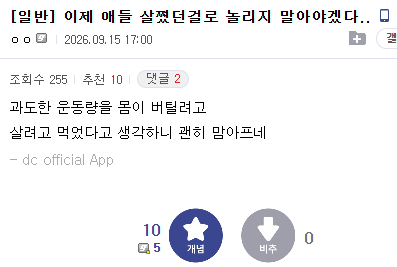
팬들 반응도 씹창남

팬카페 및 커뮤 유튜브 다 가보고 말하는 거임